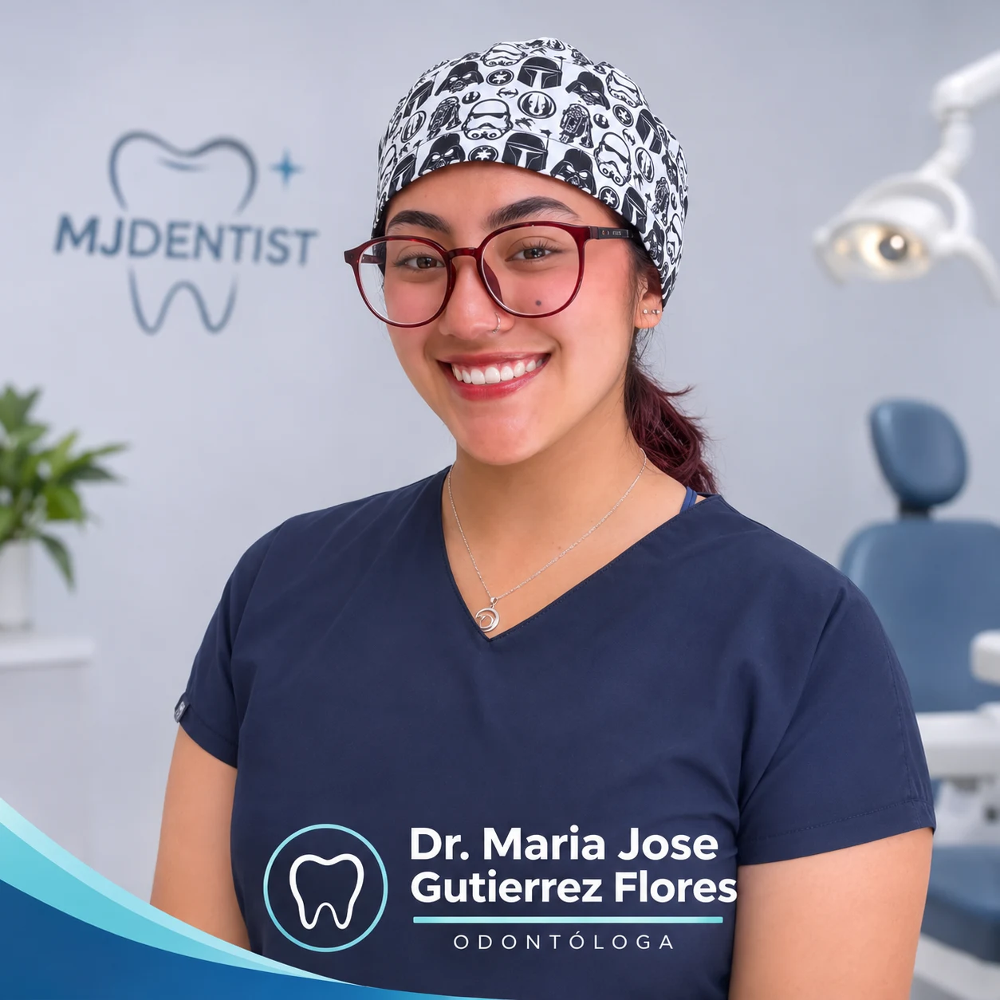

La prevención de hoy puede evitar tratamientos más complejos mañana.
Las revisiones periódicas ayudan a identificar cambios en la salud bucal y recibir orientación oportuna.
Conoce a la Dra. María José Gutiérrez Flores, descubre los servicios odontológicos y consulta cómo llegar al consultorio.

Explora nuestros servicios y encuentra la ubicación del consultorio.
Queremos que tu visita al dentista comience con información clara, atención cercana y un espacio donde puedas expresar tus dudas.
Se trata de escuchar, orientar y acompañar a cada paciente para que comprenda las opciones de atención disponibles.
Las revisiones periódicas ayudan a identificar cambios en la salud bucal y recibir orientación oportuna.
El cepillado con pasta fluorada y la limpieza entre los dientes forman parte del cuidado diario.
Conocer el propósito y las alternativas de un procedimiento permite tomar decisiones informadas junto con el profesional.
«Cada sonrisa tiene una historia. Nuestro trabajo comienza por escucharla».
Mensaje editorial de MJDENTIST, no una cita textual atribuida a la doctora.Un vistazo a nuestras instalaciones y a la experiencia de atención.
Explora los servicios de valoración, prevención, restauración, rehabilitación y especialidades. La disponibilidad de cada tratamiento se confirma directamente con el consultorio.
Presentación de la profesional. La galería de procedimientos se publicará únicamente después de verificar las autorizaciones correspondientes.
Dra. María José Gutiérrez Flores
Consulta nuestra ubicación en Google Maps y obtén indicaciones para llegar.
Atención odontológica con la Dra. María José Gutiérrez Flores.
Ver ubicación y cómo llegar ↗El enlace abre la ubicación compartida por el consultorio en Google Maps.